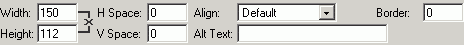

Après avoir sélectionné l'image désirée, on peut définir des attributs supplémentaires pour l'image respective:
- Espacement – est utilisé pour définir la distance entre l'image insérée et les autres éléments qui l'entourent (images, tableaux ou texte). Les utilisateurs peuvent établir de valeurs tant pour l'Espacement Vertical que pour celui Horizontal. Par défaut, les valeurs sont mises à "0".
- Texte Alternatif – ce texte sera affiché par les navigateurs qui ne supportent pas les images. Dans les navigateurs les plus habituels, ce texte apparaîtra aussi lorsqu'on déplace le curseur en dessus de l'image;
- Alignement – indique la position de l'image par rapport aux autres éléments de la page. Les options disponibles sont: Défaut, Gauche, Droite, Haut, Milieu, Bas;
- Epaisseur Bordure – il faut saisir une valeur en pixels si l'on veut une bordure autour de l'image. La valeur par défaut est 0, c'est-à-dire que la bordure ne sera pas affichée.
- Largeur & Hauteur – les dimensions de l'image. Pour maintenir la taille originelle de l'image, il faut ne pas toucher aux valeurs par défaut de ces champs. On peut également redimensionner l'image après l'avoir insérée dans la page, en la sélectionnant et en déplaçant la poignée de sélection du haut, du bas ou du côté.